Greatest Players
BYU is known for being one of the largest producers of NFL Superstars. On this page, there will be listed every NFL who played NCAA Football at BYU. This list is based on each of these players' NFL careers, not college. There is a short description of the player and his NFL career. The header of each player is a link to their "sports-reference" page. Also, some of these players are destined to rise the list because of their young age and currently being in the NFL (Puka Nacua, Taysom Hill, Jamaal Williams, Zach Wilson, etc.). The team name next to each player was the organization where the player had the best years of their career. NOTE: THIS LIST IS SUBJECT TO CHANGE!
1. Steve Young (QB) - 49ers

Drafted: 1st Round, 1st Overall in 1984 (USFL Draft by LA Express, NFL Draft 1985: Tampa Bay Buccaneers) Retired: 1999 Steve Young, a Hall of Fame quarterback, won three Super Bowls, one as the starting QB. He was known for his athleticism, mobility, and passing accuracy, earning two NFL MVPs in his career.
2. Fred Warner (LB) - 49ers
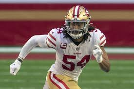Drafted: 3rd Round, 70th Overall in 2018 Still active, Fred Warner has quickly established himself as one of the league's top linebackers. He is known for his elite coverage skills and leadership on the 49ers' defense.
3. Taysom Hill (QB/Utility) - Saints
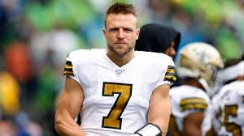Signed as Undrafted Free Agent in 2017 Still active, Taysom Hill has thrived as a versatile player for the Saints, contributing at quarterback, tight end, and special teams, and being recognized for his unique skill set.
4. Kyle Van Noy (LB) - Patriots
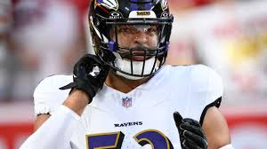Drafted: 2nd Round, 40th Overall in 2014 Still active, Kyle Van Noy was a critical part of the New England Patriots defense, contributing to multiple Super Bowl wins. He was known for his ability to rush the passer and cover tight ends.
5. Dennis Pitta (TE) - Ravens
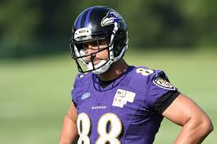Drafted: 4th Round, 114th Overall in 2010 Retired: 2017 Dennis Pitta was a standout tight end for the Ravens, earning Pro Bowl honors and playing a key role in their Super Bowl XLVII victory with his reliable hands and route running.
6. Ziggy Ansah (DE) - Lions
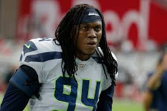Drafted: 1st Round, 5th Overall in 2013 Retired: 2021 Ziggy Ansah was one of the top pass rushers in the league for a few years, making the Pro Bowl in 2015 and becoming the centerpiece of the Lions' defensive line.
7. Jamaal Williams (RB) - Packers 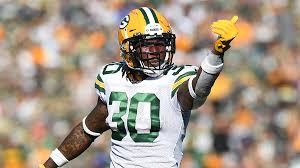
Drafted: 4th Round, 134th Overall in 2017 Still active, Jamaal Williams has been a steady contributor at running back, known for his toughness and leadership. He’s played for the Packers and Lions, earning respect for his work ethic.
8. Jim McMahon (QB) - Bears
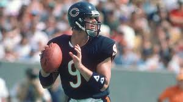Drafted: 1st Round, 5th Overall in 1982 Retired: 1996 Jim McMahon led the Chicago Bears to victory in Super Bowl XX and was known for his brash personality and tough play. He earned a reputation as a gritty leader of the 1985 Bears team.
9. Lee Johnson (P) - Bengals 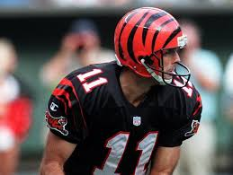
Drafted: 7th Round, 182nd Overall in 1988 Retired: 2003 Lee Johnson had a long and productive career as a punter, earning two Pro Bowls and playing for the Bengals for over a decade.
10. Ty Detmer (QB) - 49ers
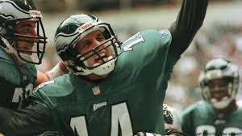Drafted: 9th Round, 230th Overall in 1992 (49ers) Retired: 2005 Ty Detmer was a standout at BYU, earning the Heisman Trophy, though his NFL career was primarily as a backup quarterback. He played for several teams, including the Eagles and 49ers.
11. Vai Sikahema (KR/PR) - Eagles
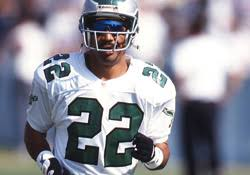Signed as Undrafted Free Agent in 1986 Retired: 1994 Vai Sikahema was one of the best return specialists in NFL history, making the Pro Bowl multiple times. He is known for his explosive speed and playmaking ability.
12. Todd Christensen (TE) - Raiders
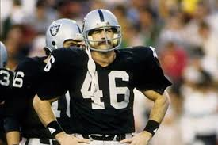Drafted: 2nd Round, 38th Overall in 1978 (Dallas Cowboys) Retired: 1988 Todd Christensen was an elite tight end, earning multiple Pro Bowl appearances and leading the NFL in receptions in 1983 while playing for the Oakland Raiders.
13. Puka Nacua (WR) - Rams

Drafted: 5th Round, 177th Overall in 2023 Still active, after a successful college career at BYU, Puka Nacua has made an immediate impact in the NFL with his athleticism and ability to make big plays as a wide receiver.
14. Zach Wilson (QB) - Jets
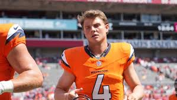Drafted: 1st Round, 2nd Overall in 2021 Still active, Zach was drafted high but has struggled with consistency and performance issues early in his career. Despite flashes of potential, his tenure with the New York Jets has been tumultuous, and he remains a work in progress with opportunities to improve as both a starter and backup.
15. John Beck (QB) - Dolphins
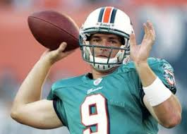Drafted: 2nd Round, 40th Overall in 2007 Retired: 2012 John Beck's NFL career was short-lived, primarily as a backup quarterback with the Dolphins and Washington Football Team, but he showcased flashes of potential.